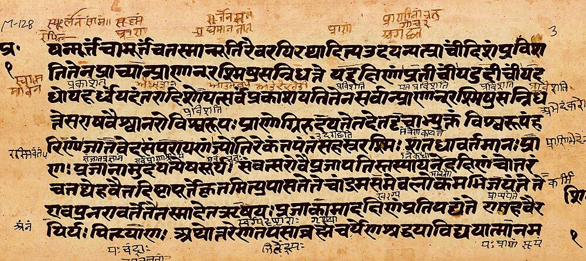
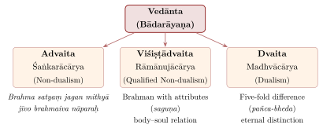
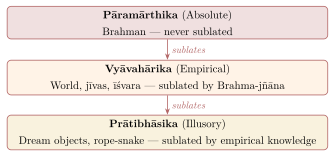
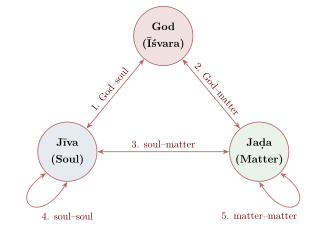

Chapter 7: Vedānta — Advaita, Viśiṣṭādvaita and Dvaita¶
Invocation from Brahma Sūtra
athāto brahma-jijñāsā
Now, therefore, the inquiry into Brahman.
— Brahma Sūtra 1.1.1 (Bādarāyaṇa)
7.1 Introduction: The End of the Vedas¶
Vedānta literally means “the end of the Vedas” (veda + anta), referring both to the Upaniṣads as the concluding portions of Vedic literature and to the “culmination” or “ultimate purport” of Vedic teaching. It is also known as Uttara Mīmāṃsā (the Later Investigation), dealing with Brahma-jñāna (knowledge of the Absolute) as Pūrva Mīmāṃsā deals with dharma (ritual duty).
In the second millennium CE Vedānta became the dominant framework of Brahmanical theology, and in the modern period it has often been presented, somewhat misleadingly, as the essence of “Hindu philosophy” as a whole. Its interpretations range from the non-dualism of Śaṅkara to the dualism of Madhva (Deutsch 1969; Comans 2000).
7.2 The Triple Foundation and the Central Questions¶
All Vedānta schools accept three foundational texts, the prasthāna-traya: the Upaniṣads, the revealed basis, especially the ten principal ones (Īśa, Kena, Kaṭha, Praśna, Muṇḍaka, Māṇḍūkya, Taittirīya, Aitareya, Chāndogya and Bṛhadāraṇyaka); Bādarāyaṇa’s Brahma Sūtra, about 555 sūtras in four chapters (the count varies between commentators), which systematises the Upaniṣadic teaching and is so terse that it cannot be understood without a commentary; and the Bhagavad Gītā. The founders of the major schools established their authority by commenting on these texts: Śaṅkara and Madhva on all three, Rāmānuja on the Brahma Sūtra and the Gītā, expounding the Upaniṣads in his Vedārthasaṅgraha. Figure 7.1 shows a manuscript page of one of the principal Upaniṣads.


Vedānta asks what Brahman, the ultimate reality, is; what the individual self (jīva) and the world (jagat) are; how the three are related; and what liberation is and how it is attained. Since the texts speak both of identity (“That thou art”) and of difference (“two birds, close companions”), the answers depend on how they are read, and the different answers generate the schools (Figure 7.2).

7.3 Advaita Vedānta — Śaṅkara’s Non-Dualism¶
7.3.1 The Life and Legacy of Śaṅkara¶
Historical Note: Śaṅkara (c. 700–750 CE; older conventional dating 788–820)
Śaṅkara is the most influential exponent of Advaita, though he was not its founder: Gauḍapāda’s Māṇḍūkya Kārikā (c. 6th century) already teaches non-dualism. Most recent scholars date Śaṅkara to c. 700–750 CE. The dates 788–820, long repeated in textbooks, are an older conventional dating, which nineteenth-century scholars took from a late traditional source; the monastic (maṭha) traditions themselves give quite different dates, some of them centuries BCE. The hagiographies (Śaṅkaradigvijaya texts, mostly 14th century or later) say he was born at Kālaḍi in Kerala, died at 32, and founded four monasteries; these accounts are legendary in detail (Comans 2000). His authentic works include the commentaries on the Brahma Sūtra, the principal Upaniṣads and the Bhagavad Gītā, and the Upadeśasāhasrī. Hundreds of other works are ascribed to him; most scholars regard popular texts such as the Vivekacūḍāmaṇi and Ātmabodha as later works by authors of his school.
7.3.2 The Core Doctrine: Brahman Alone Is Real¶
The essence of Advaita is often summarised in a famous half-verse, popularly attributed to Śaṅkara but found only in later works of doubtful authorship:
A Traditional Summary of Advaita
brahma satyaṃ jagan mithyā jīvo brahmaiva nāparaḥ
Brahman is the (sole) Reality; the world is appearance (mithyā); the individual soul is none other than Brahman itself.
— Later Advaita tradition
7.3.3 Brahman and Īśvara¶
Brahman is the sole, non-dual, infinite, conscious reality. Śaṅkara distinguishes Brahman without attributes (nirguṇa), the unconditioned reality beyond all predication, from Brahman with attributes (saguṇa), Brahman as conceived through the limiting adjunct (upādhi) of māyā. The latter is īśvara, the personal God who creates, sustains and dissolves the world. Īśvara is not an illusion — he is the highest reality within the empirical order — but he is not the ultimate reality either: when Brahman is known, the distinction between īśvara and the individual self dissolves, and only Brahman without attributes remains. The individual self, in turn, is in essence identical with Brahman; its apparent individuality is due to the superimposition of body, mind and senses on the pure self.
7.3.4 The Doctrine of Adhyāsa (Superimposition)¶
Śaṅkara’s whole enterprise rests on the concept of superimposition. His preamble to the Brahmasūtrabhāṣya, the Adhyāsabhāṣya, describes it as the fundamental human error from which worldly experience, bondage and suffering arise:
Adhyāsa
…satyānṛte mithunīkṛtya ‘aham idam’ ‘mamedam’ iti naisargiko ’yaṃ lokavyavahāraḥ
…coupling the real and the unreal, [people engage in] this natural, everyday usage: “I am this”, “this is mine”.
— Śaṅkara, Brahmasūtrabhāṣya, introduction (Adhyāsabhāṣya)
Superimposition is the appearance, in the form of memory, of something previously seen in something else. In its cosmic form it runs both ways: the properties of the self — consciousness, being — are attributed to the not-self, the body and mind, and the properties of the not-self — finitude, change, suffering — are attributed to the self. This mutual superimposition (itaretarādhyāsa) is shown in Table 7.1.
| Direction | What Is Superimposed | Result |
|---|---|---|
| Self on not-Self | Consciousness attributed to body/mind | “My body is conscious”; “My mind knows” |
| Not-Self on Self | Limitation attributed to Ātman | “I am limited”; “I suffer”; “I will die” |
| Properties of one sense-object on another | Shell mistaken for silver | “This is silver” (when it is shell) |
| Dream objects on waking | Dream experience taken as real | Confusion of dream and waking states |
Śaṅkara argues that this superimposition is naisargika (natural/innate) and anādi (beginningless). It is not the result of any particular event or act of will but is the fundamental structure of unenlightened experience. All worldly transactions — cognitive, practical, and ritual — presuppose this superimposition. Even the Vedic injunctions (“one should perform the Agnihotra”) operate within the domain of adhyāsa, for they address an agent who identifies himself with a body. The purpose of Vedānta is to remove this beginningless superimposition through the knowledge of the identity of Ātman and Brahman.
Śaṅkara’s argument for the doctrine is an argument from the structure of experience. Every cognition, action and ritual presupposes a knower who takes himself to be embodied, and so presupposes the confusion of self and body; yet the self, which is pure consciousness, cannot really be a body. Since the confusion is present in all experience, it cannot be removed by any experience of the ordinary kind, but only by the knowledge of the self’s identity with Brahman that the Upaniṣads give. Critics asked how something that is never an object — the self — can have anything superimposed on it, since superimposition requires an object present to the senses; Śaṅkara replied that the self is not wholly unknown, since it is the object of the notion “I”, and that space, which is not perceived, is still said to be blue.
7.3.5 Māyā and Avidyā¶
The world-appearance arises from ignorance (avidyā), which later Advaitins also call māyā. Śaṅkara himself speaks mostly of ignorance and superimposition; the systematic doctrine that ignorance is anirvacanīya — neither real (sat) nor unreal (asat), but false (mithyā) — was developed by his near-contemporary Maṇḍana Miśra and by his successors (Padmapāda, Prakāśātman and others). In the developed doctrine māyā is the indescribable power of Brahman through which the world-appearance is projected. It has two functions, concealment (āvaraṇa) of Brahman’s true nature and projection (vikṣepa) of the manifold world, as Sadānanda’s Vedāntasāra (15th century) puts it; it is beginningless but can be ended by knowledge; and, consisting of the three guṇas, it is the material cause of the world at the empirical level. Its status — neither real nor unreal — is a category of its own, and it was the target of Rāmānuja’s criticisms (Section 7.5).
7.3.6 The Three Levels of Reality¶
Śaṅkara distinguishes the standpoint of ultimate truth (paramārtha) from that of everyday transaction (vyavahāra); later Advaitins formalised the distinction as three levels of reality. Brahman alone is absolutely real (pāramārthika), never sublated by any further knowledge. The world of everyday experience, including bodies, selves and īśvara, is empirically real (vyāvahārika): real within its own domain — fire burns and walls resist us, whatever our philosophy — but sublated by the knowledge of Brahman. Individual errors such as the snake seen in a rope, or the objects of a dream, are merely apparent (prātibhāsika), and are sublated even within ordinary experience (Figure 7.3).

The Advaita theory of error follows from this picture. When one mistakes a shell for silver, the silver is neither absolutely real, since it is contradicted on closer examination, nor absolutely unreal, since it was genuinely experienced; it is indescribable (anirvacanīya) in terms of real and unreal. The same logic is then extended to the world-appearance as a whole. This theory, anirvacanīyakhyāti, is compared with the theories of error of the other schools in Chapter 13 (Table 13.4).
7.3.7 The Great Sayings (Mahāvākyas)¶
All Vedānta schools engage with the “great sentences” of the Upaniṣads (Table 7.2), and their readings of them are a test of their methods.
| Mahāvākya | Source | Meaning |
|---|---|---|
| Prajñānaṃ brahma | Aitareya Up. | Consciousness is Brahman |
| Ahaṃ brahmāsmi | Bṛhadāraṇyaka Up. | I am Brahman |
| Tat tvam asi | Chāndogya Up. | That thou art |
| Ayam ātmā brahma | Māṇḍūkya Up. | This Self is Brahman |
The Advaita interpretation, systematised by Sureśvara and later authors, uses the technique of “implication that partly gives up and partly keeps” the primary meaning (jahad-ajahal-lakṣaṇā, also called bhāga-lakṣaṇā). In “That thou art”, the primary meaning of “That” is īśvara, God with māyā, and of “thou” the individual self with its limitations. To identify these would be absurd, like identifying a king with a beggar. The sentence therefore asserts the identity of what is common to both, pure consciousness, dropping the incompatible features — omniscience on one side, ignorance on the other — as one does in “this is that Devadatta”, where the person seen now and the person seen before are identified while the differences of place and time are set aside. For Śaṅkara the sentence thus directly asserts the identity of the self with Brahman. Rāmānuja takes it to assert the inseparability of the self, as body, from Brahman, as its soul, and insists on the primary meaning throughout; Madhva reads it as asserting that the self is dependent on and different from Brahman, and one Mādhva reading divides the words to give “thou art not that” (atat tvam asi). The reasons for these differences of method are discussed in Chapter 8 (Section 8.7).
7.3.8 Liberation and Jīvanmukti¶
Liberation, for Advaita, is not the attainment of something new but the realisation (avagati) of what one has always been, Brahman. It comes from knowledge, which arises through hearing the teaching of the great sayings (śravaṇa), reflection that removes doubts (manana) and sustained contemplation (nididhyāsana). Because liberation is knowledge, it can occur while the body still lives. On the dawn of knowledge one is liberated at once, though the body continues, like a potter’s wheel turning after the push has stopped, until the karma that has already begun to bear fruit (prārabdha) is exhausted. The one liberated while living (jīvanmukta) has no sense of “I” or “mine”, is indifferent to praise and blame, acts without personal motive, and “sees the same in a learned brahmin, a cow, an elephant, a dog and a dog-eater” (Bhagavad Gītā 5.18); no new karma accrues to him. At the fall of the body comes liberation without a body (videhamukti), which is not a new state but the end of the last appearance of individuality.
7.4 Advaita after Śaṅkara: The Later Schools and the Dialectical Turn¶
Śaṅkara left many questions open, and his successors answered them in different ways. Over the next eight centuries Advaita became a scholastic tradition with its own sub-schools, its own technical vocabulary, much of it borrowed from Nyāya and Mīmāṃsā, and a long controversy with the Dvaita school of Madhva. This section outlines that development; the difference between the Bhāmatī and Vivaraṇa schools on the locus of ignorance is summarised in Volume 2 (Upaniṣad Dīpikā), and is only recalled here (Potter 1981).
7.4.1 Maṇḍana, Sureśvara and Padmapāda¶
Three near-contemporaries of Śaṅkara shaped what came after. Maṇḍana Miśra, a Mīmāṃsaka who also wrote on Advaita, is the author of the Brahmasiddhi, whose four sections deal with Brahman, with reasoning (tarka), with injunction (niyoga) and with the attainment of liberation. Its section on reasoning argues that perception grasps only bare being and cannot grasp difference, since difference is relative to something else and so cannot be presented in a single perception; the plurality of the world is therefore not established by perception, and scripture’s teaching of non-duality is not contradicted by it. Maṇḍana held that ignorance belongs to the individual selves, not to Brahman (“the defilement by ignorance belongs to the jīvas, not to Brahman”); that the verbal knowledge given by the Upaniṣads is indirect and must be made direct by sustained meditation (prasaṅkhyāna); and that ritual action can assist the rise of knowledge. Later tradition identified him with Sureśvara, saying that he took that name after Śaṅkara defeated him in debate; most modern scholars reject the identification, since the two hold different views.
Sureśvara, Śaṅkara’s pupil, wrote the Naiṣkarmyasiddhi (“The Establishment of Actionlessness”) and long verse commentaries (vārttikas) on Śaṅkara’s commentaries on the Bṛhadāraṇyaka and Taittirīya Upaniṣads. Against Maṇḍana he held that the Upaniṣadic sentence itself produces immediate knowledge, so that no further meditation is needed; that action has no place in the attainment of liberation; and that the individual self is a “semblance” (ābhāsa) of consciousness in the intellect — a view later called ābhāsavāda. Padmapāda, another pupil, commented on the opening of Śaṅkara’s Brahmasūtrabhāṣya in the Pañcapādikā. He described ignorance as a beginningless, insentient power that is the material of the world-appearance, and so opened the way for the doctrine of a “root ignorance” (mūlāvidyā). Prakāśātman’s Pañcapādikāvivaraṇa developed this into the Vivaraṇa school, for which Brahman itself is the locus and the object of ignorance and the individual self is Brahman’s reflection in ignorance (pratibimbavāda). Vācaspati Miśra’s Bhāmatī, a sub-commentary on Śaṅkara (9th or 10th century), followed Maṇḍana instead: ignorance resides in the individual selves, and the self is Brahman as delimited by ignorance, like space enclosed in a pot (avacchedavāda).
7.4.2 Śrīharṣa and the Critique of Definitions¶
From the eleventh century Advaitins increasingly met the Naiyāyikas on their own ground. The most original of them was Śrīharṣa (12th century), poet of the Naiṣadhīyacarita at the court of Kanauj, whose Khaṇḍanakhaṇḍakhādya (“The Sweets of Refutation”) is a systematic attack on the Nyāya definitions of the means and objects of knowledge (Granoff 1978; Phillips 1995). His method is close to that of vitaṇḍā (Section 13.8): he does not defend a rival theory of the means of knowledge but shows, case by case, that each proposed definition of valid cognition, of perception, of inference, of causality or of difference either fails to cover what it should or covers what it should not. Difference is a favourite target. One of his arguments runs as follows. If difference were the very nature of the things that differ, then a thing would be different by its own nature, and to grasp the thing would be to grasp it as different from everything — which no one does; if difference were a property over and above the things, it would itself have to differ from them, and a regress follows. Śrīharṣa concludes that the world of difference is indefinable (anirvacanīya), which is exactly what the Advaitin says of it.
Śrīharṣa also faced the obvious objection: how can an Advaitin, who holds that the means of knowledge are not ultimately real, take part in debate at all? His answer is that debate requires only that both parties accept the means of knowledge for the purposes of the debate, as a matter of practice (vyavahāra), not that they hold them to be ultimately real. The argument made Advaita a formidable dialectical opponent and provoked the Navya-Nyāya reply: much of Gaṅgeśa’s effort to define his terms with exact limitors (Section 2.11) can be read as a response to Śrīharṣa’s challenge (Phillips 1995). A little later (probably in the 13th century) Citsukha’s Tattvapradīpikā continued the critique of Nyāya categories and gave a careful definition of the self-luminosity of consciousness: it is that which is fit to be treated as immediately present while never being an object of cognition.
7.4.3 The Controversy with Dvaita¶
The longest controversy of late Vedānta was with the followers of Madhva (Section 7.6). Jayatīrtha (14th century) had systematised Madhva’s arguments in his Nyāyasudhā; Vyāsatīrtha (c. 1460–1539), the leading Mādhva scholar at the Vijayanagara court, then wrote the Nyāyāmṛta, a detailed refutation of Advaita that used the methods of Navya-Nyāya (Stoker 2016). Its first target was the Advaita claim that the world is false (mithyā). Vyāsatīrtha examined each definition of falsity that the Advaitins had proposed and argued that each either applies to Brahman as well, or fails to apply to the world, or involves a contradiction. He also posed a dilemma: the world’s falsity must itself be either real or false. If it is real, there is a second reality besides Brahman and non-duality is lost; if it is false, the world is not false after all, and so is real.
The Advaita reply was Madhusūdana Sarasvatī’s Advaitasiddhi (16th or 17th century), one of the most technical works in Indian philosophy (Gupta 2006). It opens by defending, against the Nyāyāmṛta, five definitions of falsity drawn from earlier Advaitins: that which is not the locus of either being or non-being; that which is the counterpositive of an absence, in all three times, in the very locus where it appears; that which is removed by knowledge; that which is the counterpositive of an absolute absence residing in its own locus; and that which is other than the real. To the dilemma, Madhusūdana answers that the falsity of the world is itself false (mithyātvam api mithyā), and argues at length that this does not make the world real. The debate continued for generations: Rāmācārya’s Taraṅgiṇī defended Vyāsatīrtha, and Brahmānanda Sarasvatī’s commentaries defended Madhusūdana. Madhusūdana was also a devotee of Kṛṣṇa, whose Bhaktirasāyana treats devotion as a rasa; the combination shows that the Advaita of this period was not hostile to bhakti.
7.4.4 Diversity within Late Advaita¶
The tradition never settled into a single doctrine. Appayya Dīkṣita (16th century) collected its disagreements in the Siddhāntaleśasaṃgraha — on the locus of ignorance, on whether there is one individual self or many, on whether the self is a reflection, a semblance or a delimitation of Brahman, and on how verbal testimony produces liberating knowledge. At one extreme Prakāśānanda (probably 16th century) defended the view that there is only one individual self and that the world exists only in being perceived (dṛṣṭisṛṣṭivāda), as in a dream. At the other, Dharmarāja Adhvarin’s Vedāntaparibhāṣā (17th century) worked out an Advaita epistemology that accepts the six means of knowledge of the Bhāṭṭa Mīmāṃsakas for everyday purposes (Chapter 6) and adopts Navya-Nyāya terminology; it became, with Sadānanda’s Vedāntasāra, a standard textbook. Through such works, and through the modern Vedānta movements described in Chapter 8 and Volume 24, late scholastic Advaita shaped the picture of Indian philosophy that reached the modern world (Ganeri 2011).
7.5 Viśiṣṭādvaita — Rāmānuja’s Qualified Non-Dualism¶
Historical Note: Rāmānuja (traditionally 1017–1137 CE)
Rāmānuja, born according to tradition at Śrīperumbudūr (Tamil Nadu), was the most formidable philosophical challenger to Advaita. The traditional lifespan of 120 years is doubted, and some scholars place him c. 1077–1157. He built on the work of Yāmunācārya and on the devotional poetry of the Āḻvārs, several of whom were not brahmins. He authored the Śrībhāṣya (commentary on the Brahma Sūtra), the Gītābhāṣya and the Vedārthasaṅgraha, and organised the Śrī Vaiṣṇava tradition (Carman 1974).
7.5.1 Method and Core Doctrines¶
Rāmānuja’s method is a scriptural realism. All Upaniṣadic statements are to be taken as referring to real things, not explained away as figurative or provisional; and when the texts predicate both unity and plurality of Brahman, both are literally true, by “co-ordinate predication” (sāmānādhikaraṇya): two words with different meanings can refer to one thing, as “the blue lotus” refers to one lotus qualified by blueness. Brahman, accordingly, is not without attributes but possesses infinite auspicious qualities (kalyāṇa-guṇas), and is identified with Nārāyaṇa, Viṣṇu. The selves and the world are real and are related to Brahman as body to soul (śarīra-śarīri-bhāva): a body, in Rāmānuja’s definition, is whatever a conscious being supports, controls and uses for its own purposes, and in that sense everything is the body of God, who is its inner controller (antaryāmin). Brahman is therefore a “qualified” (viśiṣṭa) unity, one whole whose real modes (prakāra) are the selves and the world. The selves are many, eternal, atomic and conscious, distinct from one another and from God though wholly dependent on him (Table 7.3). God is not conditioned by māyā but is the master of primordial nature; Rāmānuja rejects outright the Advaita distinction between a higher, attributeless Brahman and a lower, personal God.
| Category | Sanskrit | Characteristics |
|---|---|---|
| God | īśvara (Nārāyaṇa) | Supreme, independent, infinite, possessing all auspicious qualities; the inner controller (antaryāmin) of all |
| Souls | Cit (Jīvas) | Atomic, conscious, eternal, many; dependent on God; either bound (baddha), liberated (mukta), or ever-free (nitya) |
| Matter | Acit (Prakṛti) | Unconscious, real, ever-changing, the material for God’s creative activity; also eternal and dependent on God |
7.5.2 The Paths to Liberation¶
Liberation, for Rāmānuja, is not identity with God but the self’s realisation of its true nature as God’s servant (śeṣa), in eternal communion with him and in the bliss of service (nitya-kaiṅkarya); it comes only after death, since Rāmānuja rejects liberation while living. The Śrī Vaiṣṇava tradition recognises two paths to liberation:
-
Bhakti-Yoga (The Path of Devotion) — The path expounded in Rāmānuja’s commentaries: karma-yoga and jñāna-yoga prepare the way for bhakti, continuous loving meditation on God, which is open to the twice-born who are qualified for Vedic study
-
Prapatti / Śaraṇāgati (Total Surrender) — Complete self-surrender to God’s grace, open to all regardless of caste, learning or merit. It is expressed in the Śaraṇāgatigadya ascribed to Rāmānuja, and became the central path for later teachers
Those later teachers — Vedānta Deśika and Piḷḷai Lokācārya above all — read the Gītā’s “Abandoning all dharmas, take refuge in me alone” (18.66) as the carama-śloka, the “final verse” that authorises prapatti in place of the demanding discipline of bhakti-yoga. Rāmānuja’s own commentary on the verse is more cautious and offers more than one explanation of it; the doctrinal weight placed on it is a development of the following centuries, and it later divided the Vaḍakalai and Teṅkalai branches of the tradition over the role of the soul’s own effort.
7.5.3 Rāmānuja’s Critique of Advaita¶
In the Śrībhāṣya Rāmānuja raises seven objections against the Advaita doctrine of avidyā, known as the saptavidha anupapatti (seven untenabilities):
-
Āśraya — Avidyā can have no locus: not Brahman, which is pure knowledge, nor the jīva, which is itself a product of avidyā
-
Tirodhāna — Avidyā cannot conceal Brahman, whose very nature is self-luminous
-
Svarūpa — Its nature cannot be stated: if real, non-dualism fails; if unreal, it can do nothing
-
Anirvacanīyatva — Something “neither real nor unreal” is a contradiction
-
Pramāṇa — No valid means of knowledge establishes such an avidyā
-
Nivartaka — No knowledge can remove it, since knowledge of an attributeless Brahman is impossible
-
Nivṛtti — Its cessation is impossible, since what is beginningless and positive cannot be destroyed by knowledge
7.6 Dvaita — Madhva’s Dualism¶
Historical Note: Madhva (c. 1238–1317 CE)
Madhva (Ānandatīrtha; the Mādhva tradition dates him 1199–1278), born near Uḍupi in Karnataka, propounded the most thoroughgoing realist and dualist interpretation of Vedānta. His works, traditionally counted as thirty-seven, include commentaries on the prasthānatraya. His philosophy is also called Tattvavāda (the doctrine of reality) (Sharma 1962).
7.6.1 The Five-fold Difference (Pañca-Bheda)¶
The hallmark of Dvaita is its assertion of five real and eternal differences (Figure 7.4):

7.6.2 Core Doctrines of Dvaita¶
For Madhva, Viṣṇu alone is independent (svatantra); everything else is dependent (paratantra). God is the efficient cause of the world but not its material cause, which is primordial nature, lest God be subject to change. The world is not false but real, though dependent on God. The selves are eternally distinct from God and from one another, and they are graded: there is a natural hierarchy (tāratamya) among all beings, with Viṣṇu supreme, Lakṣmī next, then Brahmā and Vāyu, the other gods in descending order, human selves according to their innate fitness (svābhāvika yogyatā), and matter at the bottom. The hierarchy is eternal, the inherent nature of each being, and not the result of karma. Liberation is attained only through God’s grace, earned by devotion, and consists in the vision and service of God; in it the selves keep their individuality and their rank. Even more controversial was Madhva’s division of souls into three eternal classes (Table 7.4).
| Class | Sanskrit | Destiny |
|---|---|---|
| Fit for liberation | Mukti-yogya | These souls will eventually attain eternal bliss in the presence of Lord Viṣṇu through bhakti and divine grace |
| Eternally transmigrating | Nitya-saṃsārī | These souls will continue in the cycle of saṃsāra forever, never attaining liberation nor being condemned |
| Destined for darkness | Tamo-yogya | These souls are destined for eternal damnation (andha-tamas), having an intrinsic nature opposed to God |
This doctrine of eternal damnation for some souls is distinctive among Indian schools (Jains, too, hold that some souls, the abhavya, can never be liberated, but not that they are damned) and was sharply criticised by other Vedāntins.
7.7 The Three Schools Compared¶
Table 7.5 compares the three schools point by point, and Table 7.6 their conceptions of liberation.
| Topic | Advaita | Viśiṣṭādvaita | Dvaita |
|---|---|---|---|
| Brahman | Nirguṇa (attributeless) | Saguṇa (with infinite qualities) | Lord Viṣṇu (supreme person) |
| God | Brahman as conditioned by māyā; real only empirically | Brahman itself, the inner controller of all | Wholly independent; efficient cause only |
| World | Mithyā (apparent) | Real (body of Brahman) | Real (dependent) |
| Jīva | Identical with Brahman | Mode (prakāra) and body of Brahman | Eternally distinct |
| Relation | Identity | Qualified unity | Difference |
| Ācārya | Śaṅkara | Rāmānuja | Madhva |
| Date | c. 700–750 CE (older conventional dating 788–820) | traditionally 1017–1137 CE | traditionally 1238–1317 CE (some scholars 1199–1278) |
| Aspect | Advaita | Viśiṣṭādvaita | Dvaita |
|---|---|---|---|
| Nature of mokṣa | Realisation of identity with Brahman | Eternal communion with God in Vaikuṇṭha | Vision and service of God in eternal bliss |
| Means | Knowledge alone | Bhakti culminating in prapatti (surrender) | Bhakti with divine grace (prasāda) |
| State of the liberated | Pure consciousness; no individuality | Retains individuality; enjoys God’s presence | Retains individuality; ranked in bliss |
| Liberation while living | Yes (jīvanmukti) | Rejected; liberation follows death | Final liberation only after death; one who has the direct vision of God lives out his remaining karma, a state some Mādhva authors compare to liberation while living |
The three schools are often presented as a neat spectrum, from an impersonal Absolute above a personal God, through a personal God who is both transcendent and immanent, to a personal God utterly sovereign and other. The picture is useful for orientation but misleading if taken as complete: Chapter 8 describes schools that do not fit on a single line between identity and difference, and Śaiva theologians built non-dualisms and dualisms of their own (Chapter 12). What the three share is narrower: the authority of the prasthāna-traya, the reality of liberation, and the conviction that ritual action alone cannot reach the highest good. On almost everything else they argued that the others had misread scripture.
7.8 Vedānta and Modern Philosophy¶
Vedānta’s influence on modern philosophical thought — both in India and internationally — has been substantial. Several areas of contemporary philosophy find resonance with Vedāntic insights.
7.8.1 Vedānta and Consciousness Studies¶
The “hard problem of consciousness” — explaining why and how subjective experience arises from physical processes — has emerged as one of the central questions in contemporary philosophy of mind. Vedānta, particularly Advaita, approaches this problem from a radically different starting point: rather than trying to derive consciousness from matter, it begins with consciousness as the foundational reality and asks how the appearance of matter arises within consciousness.
Some contemporary philosophers have compared the Advaita view that consciousness (cit) is not produced by any physical or mental process with modern views that treat consciousness as fundamental rather than emergent. Such comparisons are suggestive, but the Advaita claim rests on scriptural exegesis and an analysis of the self-luminosity of awareness, not on the arguments of modern philosophy of mind.